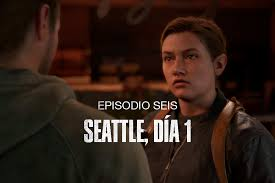

La historia del juego se divide en tres partes, el DLC Left Behind, el primer juego y el segundo.
En Septiembre de 2013, se ha desatado una pandemia en Estados Unidos ante la aparición repentina de una variación mutada de la cepa del hongo Cordyceps el cual afecta a los humanos convirtiéndolos en horrorosas criaturas caníbales que atacarán a cualquiera que no esté infectado para propagar el virus mediante un mordisco. En este escenario tan perturbador, Joel, su hija Sarah y su hermano Tommy, se disponen a abandonar su hogar en los suburbios de la ciudad de Austin en Texas ante la histeria colectiva producida por la pandemia. Cuando salían de su casa, un oficial del ejército, creyendo que Sarah estaba infectada, le dispara a esta última matándola dejando a ambos hermanos consternados.
20 años después, se hace evidente que la pandemia ha destruido a la humanidad habiendo aniquilado a más de la mitad de la población mundial. Los sobrevivientes en Estados Unidos, que se ha convertido en un estado marcial bajo el control del ejército ante el colapso del gobierno democrático y federal, viven en lugares designados como zonas de cuarentena en las cuales, bajo la menor sospecha de que haya un infectado, los militares están autorizados a ejecutar a esa persona, en asentamientos independientes o forman parte de grupos ambulantes. Joel, ahora vive en la zona de North End en Boston, Massachusetts en donde se gana la vida como contrabandista junto con su compañera Tess. Un día, en una misión de recuperación de un cargamento de armas robado por un traficante llamado Robert, se enteran de la existencia de un grupo paramilitar llamado, Las Luciérnagas el cual se opone a la idea de vivir bajo la autoridad del ejército en las zonas de cuarentena y busca el restablecimiento del antiguo gobierno. La líder del grupo, Marlene, le ordena a los contrabandistas llevarse consigo a una adolescente misteriosa de nombre Ellie a la casa del Estado de Massachusetts en las afueras de la zona de cuarentena a cambio de obtener provisiones y comida entregando a la chica a dos miembros más de la organización. La pareja accede y mientras que tratan de escapar, descubren que Ellie tiene una herida de mordedura ocasionada por un infectado.
Normalmente una persona que haya sido mordida por un infectado, tardará dos días en mostrar los síntomas de infección comunes, pero en el caso de Ellie, ha transcurrido demasiado tiempo desde que fue mordida tres semanas antes y no muestra señales de cambios, por lo cual se cree que en ella está la cura que podría salvar a la raza humana por lo que se convierte en el objetivo principal de los dos personajes el protegerla.
Joel, Tess y Ellie se cruzan con hordas de infectados por el camino hasta el sitio señalado en donde se produciría el intercambio, pero desgraciadamente al llegar descubren que los dos miembros de las Luciérnagas que los estaban esperando, están muertos y para empeorar la situación, se revela que Tess fue infectada durante la huida de unos militares que los confundieron con infectados y pretendían matarlos por lo cual para permitir que Joel y Ellie huyan, Tess decide sacrificarse quedándose atrás para enfrentar a los militares.
Joel llega a la conclusión de que necesita la ayuda de su hermano Tommy quien fue miembro de las Luciérnagas y así poder encontrar al resto del grupo. Gracias a la ayuda de un contrabandista de nombre Bill, Joel consigue reparar una camioneta con la cual viaja junto a Ellie hasta Pittsburgh, Pensilvania en donde son atacados por Cazadores quienes pretenden asesinarlos y su camioneta, termina siendo destruida, pero se encuentran con los hermanos Sam y Henry quienes les ayudan, pero desgraciadamente Sam es mordido por un infectado, algo que éste oculta al resto hasta que la infección finalmente lo transforma y ataca a Ellie obligando a que Henry lo tuviera que matar. La decisión de haber matado a su hermano lo deja tan afectado que finalmente Sam es incapaz de lidiar con la pena y acaba por suicidarse delante de Joel y Ellie
La trama avanza unos meses hasta otoño, en donde el dúo protagonista llega hasta el condado de Jackson en Wyoming en donde Joel se reencuentra con Tommy y su esposa Maria los cuales estaban refugiados en un asentamiento fortificado en una central hidroeléctrica. Por un minuto, Joel descarta la idea de seguir protegiendo a Ellie y decide dejarla con su hermano para que éste se encargue de llevarla a su destino y él decidiera volver a casa debido a que luego de pasar meses con ella ha desarrollado miedo a perderla, sin embargo, luego de ver la reacción de Ellie, cambia de parecer y decide llevarla hasta la Universidad del este de Colorado en donde se supone, hay un cuartel de las Luciérnagas, de acuerdo a la información proporcionada por Tommy. Al llegar al punto señalado, se dan cuenta de que no hay nadie allí y que los miembros de la organización se trasladaron a Salt Lake City en Utah en donde se encuentra un hospital dedicado a la investigación del virus. Desafortunadamente, son avistados por un grupo ambulante de bandidos los cuales son eliminados, pero desgraciadamente Joel termina gravemente herido.
Estamos en invierno, Ellie y Joel se encuentran ocultos en una zona montañosa en la que éste último se encuentra aún recuperándose de sus heridas y depende de Ellie para que pueda sobrevivir por lo cual ella se dedica a cazar y a conseguir los medicamentos necesarios para su supervivencia, aqui es donde sucede el DLC Left Behind. Es en esa ocasión cuando Ellie conoce a David y a James, dos sobrevivientes que le ofrecen intercambiar su comida por medicamentos, pero Ellie descubre que ambos forman parte del grupo de bandidos ambulantes que los atacaron anteriormente. Tras ser brevemente capturada por David, la joven huye hasta un restaurante abandonado y, poco antes de que el bandido la asesine, ella logra salvarse matando violentamente a David y dejándola en estado de shock ya que por primera vez en su vida, se ve forzada a asesinar a una persona para sobrevivir. Joel la consuela después de esto, y así se afianza su relación.
Unos meses más pasan hasta que estamos en primavera; el dúo llega hasta Salt Lake City en donde son sorprendidos por miembros de las Luciérnagas que luego de noquear a Joel, los escoltan hasta llegar a un hospital en donde Joel se entera de boca de Marlene, que es necesario someter a Ellie a una operación para extraer el hongo Cordyceps alojado en su cerebro para poder estudiarlo y así desarrollar la cura, sin embargo, Joel no está de acuerdo con la decisión ya que esta operación indudablemente matará a Ellie. Joel, renuente a dejar que muera Ellie a quien ha llegado a querer como una hija, se adentra al hospital y asesina a cada ser humano que custodian la sala de emergencias hasta llegar con Ellie.
Una vez llega a la sala de operaciones, un grupo de médicos la prepara para comenzar la cirugía. El cirujano principal, al ver a Joel entrar, le pregunta que está haciendo allí. Al no ver respuesta de Joel, retrocede, toma un bisturí y apuntando a Joel dice: "No puedes llevártela. Es nuestro futuro, piensa en las vidas que podremos salvar." Joel se acerca al cirujano y le corta el cuello con el bisturí. Los otros médicos gritan por él, llamando a Joel, animal. Joel voltea a Ellie, la carga en sus brazos al estar inconsciente por la anestesia y comienza a correr por los pasillos del hospital. Finalmente Joel y Marlene se encuentran en el estacionamiento del hospital en donde Marlene lo encara y le advierte de lo que podría sucederle a Ellie si se negaba a colaborar con ellos a lo que Joel responde disparándole y luego matándola. En las escenas finales del juego, se aprecia cuando Ellie despierta y le pregunta sobre lo sucedido a Joel, que le miente al asegurarle que los Luciérnagas desistieron en su búsqueda de una cura debido a sus fallidos experimentos con otras personas inmunes a la infección.
A las afueras del asentamiento donde vive Tommy, Ellie le confiesa a Joel que cuando la mordieron no estaba sola, sino que su mejor amiga Riley estaba allí y también fue mordida. Ella recuerda no sabían que hacer, entonces Riley dijo "Esperemos a que pase. Podemos ser poéticas y perder la cordura juntas." y confiesa que ella sigue esperando su turno [de morir]. Luego menciona las muertes de Tess y Sam por culpa de la infección, razón por la cual siente culpabilidad (síndrome del superviviente). Con afán de tranquilizarla, y ante la insistencia de Ellie, Joel le dice que no importa que pase, siempre hay que encontrar algo por qué luchar. Ellie lo interrumpe y lo obliga a jurarle que todo lo que le dijo de las Luciérnagas es verdad. Joel la mira fijamente y le contesta: "Lo juro." Ellie lo mira y le contesta: "Está bien".
Este DLC nos cuenta La historia de Ellie antes de los sucesos del primer juego.
Es una historia con tiempo no lineal ya que empieza con el suceso de Joel ya está herido y Ellie escondiendoló en una plaza abandonada de Colorado Mountain. Mientras Ellie explora el centro comercial y trata de encontrar suministros para sanar la herida de Joel encuentra un helicóptero colgando del techo ya abandonado, Ellie esquiva a los infectados y llega a este helicóptero abandonado, conoce la historia de sus tripulantes y consigue un botiquin.
Luego vijamos tres semanas antes del comienzo del juego, aqui, aparece Ellie dormida en su cama en un internado de FEDRA, ella es sorperndida por Riley, su amiga con la que no se ve desde algun tiempo, que le revela que se unio a las Luciernagas y la lleva al centro comercial, aqui juegan y se divierten juntas pero Riley no le a Ellie porque la trajo, despues de insistirle,Riley le dice a Ellie que la llevaran a otra ciudad y que no se van a volver a ver mas. Ambas chicas deciden tener un ultimo gran mpomento juntas, bailando con musica, aqui, ellie le suplica otra vez a Riley que se quede, en respuesta, Riley deja caer el colgante de Las Luciernagas y Ellie le daz un beso. Riley dice que esto no sera aprobado por Marlene, pero es interrumpida por los infectados atraidos por la musica.
Devuelta la presente,Ellie encuentra su camino obstaculizado por infectados y Sobrevivientes del grupo de David, Ellie logra pasar por ellos utilizando su ingenio para empezar una pelea entre los sobrevivientes y los infectados. Cuando llega donde Joel aseisna un par de canibales y que trataban de entrar, cuando entra al area donde yace Joel, llegan refuerzos y ella los mata con ayuda de los infectados de la zona. Luego del combate, se acercaa Joel a tratar su horrible herida.
Devuelta al pasado, las niñas corren de los infectados del centro comercial. Luchando y desviando su camino, finalmente, llegan al andamio para escapar ilesas. Pero, Ellie cae de este y Riley, ambas mordidas por los infectados mientras escapan. Y cuando estan a salvo ambas se dicen sus ultimas palabras antes de abandonar el centro comercial.
Las ultimas palabras de Riley estan grabadas en la mente de Ellie mientras ella lleva a Joel a otro escondite. Aqui sucede el resto de la trama de TLoU.
una semana después de la primera parte, Joel confiesa lo que sucedió en el hospital a su hermano, el cual lo perdona. 4 años después de esto, Joel y Ellie viven en una relativa paz en Jackson, Wyoming, ellos trabajan de patrullando el pueblo en busca de posibles amenazas. En este pueblo Ellie cuenta con dos amigos, Jesse y Dina (la cual es su ex novia).
una mañana, Ellie, Dina, Joel y Tommy van a patrullar, dividiéndose en 2 grupos. Cuando una tormenta de nieve atrapa a las chicas estas se esconden en un refugio de un amigo, donde encuentran cannabis, se drogan y entablan relaciones sexuales.
Mientras tanto, conocemos un grupo de gente, estos están fuera de Jackson, estos parecen buscar a alguien, dos de ellos, una mujer llamada Abby Anderson y un hombre llamado Owen, buscan una forma de llegar a Jackson, Owen pone en duda el plan y revela que su novia está embarazada, Abby se enoja por revelar este dato ahora y Owen se marcha. Abby continúa explorando y la ventisca la atrapa y los infectados la persiguen. Justo andes de que uno de estos infectados la mate, es salvada por Joel y Tommy.
Devuelta con Ellie y Dina, estas son encontradas por Jesse que les reprocha estar perdiendo el tiempo y los tres van en busca de Joel. Al mismo tiempo Joel, Tommy y Abby escapan de los infectados hasta la cabaña donde el equipo de Abby se esconde. En este lugar Tommy invita al grupo a Jackson y se presenta con su nombre. Al escuchar el nombre de Joel, Abby le dispara en la pierna, y el grupo somete a los hermano y Abby empieza a golpear a Joel con un palo de golf. Ellie encuentra la escena y es sometida también, Ellie suplica a Joel que se levante y pelee, perro Abby acaba el trabajo y mata a Joel. Abby y sus amigos dejan a Ellie viva, a pesar de las protestas de algunos.
A la siguiente mañana, todos lloran la muerte de Joel. Ellie se decide a una cosa Matar a los asesinos de Joel. La única pista que tienen es que el grupo forma parte de la WLF (Washington Liberation Front), un grupo paramilitar, Tommy no quiere ir en busca de Abby, porque dejaría Jackson sin protección, así que va a hablar con su esposa, María. Esto era una mentira, Tommy va en busca de Abby solo. María manda a Ellie y Dina a buscar a su esposo.
Las chicas buscan pistas y van a Seattle, en el camino encuentran uno de los amigos de Abby muerto junto a una pista. Mientras exploran son interceptadas por Jordan, un WLF amigo de Abby, cuando otro WLF entra, ambos hablan de que el líder de ellos, Isaac Dixon, esta estresado por el conflicto con otra facción desconocida. De pronto Dina mata al hombre y cae siendo atrapada por Jordan la ahorca a la chica y Ellie lo mata con un cuchillo. Ahora buscan a un nuevo objetivo, la novia de Jordan, Lia la cual está en una estación de TV.
en el camino encuentran pistas de Tommy, su caballo muerto. En la estación descubren muchos WLF asesinados por una facción llamada los Serafitas, o scars por sus cicatrices en la cara, estos son extremistas religiosos que buscan el progreso sin necesidad de tecnologías avanzadas, estos mataron a Lia a flechazos, entre los restos de ella encuentran fotos del resto de amigos de Abby. Después de matar un par de WLF, la pareja baja al metro y se escabulle entre infectados y WLF, la máscara de Ellie es rota por un infectado y antes de que Dina se quite la suya para dársela, Ellie le revela que es inmune, en un teatro charlan y Dia revela que está embarazada, Ellie se enoja y explora el teatro. Aquí tiene un recuerdo de cuando exploro un museo con Joel, al final de este día Ellie ve un grafiti de los Luciérnagas que debajo dice “mentirosos”, ella se pone un poco mal por esto
En el segundo día, Dina repara un transmisor y descubre donde está el resto del grupo de Abby, también descubren que alguien está atacando a los WLF en las cercanías, Ellie se lanza a buscar a ese individuo pensando que es Tommy. Cuando llega descubre que el atacante es Jesse. Escapan en una camioneta Y vuelven al teatro. Ellie recuerda una vez que encontró una pareja muerta con Joel, mientras pensaba como seria el mundo si la cura existiese, esto lleva a una discusión que Joel termina allí. En el presente Ellie va en busca de Nora, la cual está en un hospital, en el camino, encuentra Serafitas, matando WLF. En el hospital, mata a una amiga de Abby para luego interrogar a Nora, como esta no responde, Ellie la persigue hasta que caen a un agujero con esporas, ahí Ellie mata a golpes a Nora y vuelve al teatro con la ubicación de Abby. Es aquí donde recuerda que hace 2 años descubrió la verdad de lo que paso en el hospital y se enoja con Joel, rompiendo su relación.
En el ultimo día de Seattle, el grupo se decide a encontrar a Tommy y volver a casa, entonces Jesse y Ellie van en busca de Tommy, en el camino escuchan una conversación de los Wolfs sobre un francotirador en el puerto, Jesse dice de ir al puerto, pero Ellie dice que para ayudar a Tommy hay que matar a Abby, ambos se separan y Ellie va hacia el aquario, allí, mata a un perro, luego encuentra a Owen y a su novia Mel, Ellie los amenaza para saber la ubicación de Abby y en un intento de arrebatarle el arma Ellie acaba con ambos y justo antes de darle el disparo final Owen, este le dice que su novia estaba embarazada y Ellie se rompe por esto, en ese momento llegan Tommy y Jesse y se la llevan al teatro. Luego de un rato Ellie despierta en el teatro y el grupo planea su vuelta a casa. Pero cuando >Tommy se va a otra habitación se escucha alboroto y Jesse junto con Ellie van a chequear, cuando entran a la habitación Jesse muere de un disparo a la cara proporcionado por Abby, ella apunta a Tommy el cual esta en el suelo y Ellie trata de dialogar con ella, esto no funciona y Abby el apunta. esta escena se corta aquí.
Ahora nos transportamos al pasado y vemos los tres días de Seattle desde la perspectiva de Abby.
Primero vemos un flashback de hace 4 años, en este vemos a Abby con su padre, el Dr. Gerald Anderson, aquí se encuentran con Owen, este les dice que Marlene, encontró a la niña inmune, esto revela que ellos eran parte de las Luciérnagas. Luego vemos a Marlene dudando de operar a Ellie pues morirá, pero es decidida por Gerald ya que se salvarán muchas vidas. Horas luego Abby entra al hospital, este está en alerta roja, pues aquí sucedió el asalto de Joel para salvar a Ellie, cuando la chica llega a la sala de operaciones encuentra a Owen y a su padre muerto en el suelo, Owen la consuela mientras ella llora la pérdida de su única familia. Desde ese entonces Abby siempre busco venganza, dedicando toda su vida a prepararse para matar a Joel, esto llevo a que su relación con Owen nunca despegara, un día Abby le aviso a Owen que sabia donde encontrar a Joel, Owen se une al grupo, poniendo en duda si valía la pena vengarse.
En el primer día en Seattle, Abby es despertada por Manny que le avisa que Isaac Dixon, líder de la WLF quería hablar, a este punto de la historia, la guerra entre la WLF y el culto serafita estaba muy tensa. Isaac les ordena a Manny y a Abby participar en la guerra, diciéndoles también, que la armada de la WLF atacara la isla de los Serafitas. También le dice a Abby que Owen desapareció y supuestamente traiciono a la WLF, Abby decide ir tras Owen en el acuario, Abby es capturada por los Serafitas y antes de que la destripen en un ritual, llegan dos Serafitas con una chica llamada Yara, la cual traiciono al clan, en forma de castigo le rompen un brazo con un martillo, antes de que le rompan el otro brazo aparece otro traidor, Lev este mata con un arco a los Serafitas y se unen a Abby para acabar con los infectados, el grupo sobrevive y Abby acomoda el brazo de Yara, luego deja a los chicos y les dice que no tarden en irse de allí. Ya en el acuario, Abby se encuentra con Owen, esta cuenta que mientras mataba a Serafitas junto con un compañero, uno no opuso resistencia, esto hizo que Owen recapacitara y dejara de querer pelear una guerra que no es suya, entonces decide fugarse aun isla donde supuestamente se están reuniendo Las Luciérnagas devuelta. Abby le dice que no siga un rumor y Owen le reprocha que ellos siguieron un rumor cuando mataron a Joel, ambos forcejean, pero terminan teniendo relaciones sexuales.
Luego de tener una pesadilla, Abby busca a Yara y Lev, cuando ve el terrible estado en el que esta Yara, la lleva al acuario, aquí se encuentra con Mel, la cual desconoce lo que sucedió entre Owen y Abby, como la única solución al brazo de Yara es amputarlo, Abby tiene que viajar a un hospital de la WLF, allí la atrapan por no seguir una orden directa pero Nora, una amiga de Abby la libera y le dice que la única forma de conseguir lo que quiere es bajando al sótano, aquí es donde inicio la infección del Cordyceps y donde está el paciente 0, en el sótano Abby abre varias puestas electrónicas atrayendo al supuesto paciente 0, El Rey Rata, una combinación de infectados monstruosa, luego de matarlo Abby regresa con las medicinas, sin saber que esa fue la última vez que vio a Nora con vida. Cuando vuelve le amputan el brazo a Yara, pero Mel no confía en Abby pues ella siempre fue sanguinaria y violenta y ahora se volvió más compasiva. Es entonces cuando los hermanos Serafitas discuten pues Lev quiere buscar a su madre y Yara quiere escapar con Mel y Owen a Santa Barbara, aquí descubrimos que Lev es un chico trans que nunca se identificó con las creencias extremistas de los Serafitas, cuando lo mandaron casarse con uno d ellos lideres del grupo, Lev se rapo, esto era exclusivo de los hombres, luego de esta charla Lev se roba una lancha para irse a la isla Serafita, Abby y Yara buscan un barco en el puerto para alcanzar al chico, aquí se encuentran con que Manny está luchando con un francotirador, luego de esquivarlo y ponerse bajo protección, el francotirador acaba con Manny y forcejea con Abby, aquí se revela que este era Tommy Miller, el hermano de Joel, gracias a Yara Abby lanza a Tommy al océano.
ya en la isla de los Serafitas, la guerra con la WLF ya estallo y las chicas llegan a la casa de la madre de Lev y Yara, solo para encontrar que esta estaba muerta, ya que Lev la empujo para defenderse de ella, pero se golpeó la nuca y murió, mientras escapan, Yara es herida de gravedad y los 3 se encuentran con Isaac, este esta tan cegado por la guerra que quiere matar a Lev solo por ser un Serafita, por suerte Yara usa su ultimo aliento para matar a Isaac y darles tiempo a los otros dos para que escapen. Cuando llegan al acuario devuelta encuentran a Mel y Owen muertos, usando un mapa que Ellie dejo atrás, decidió ir tras ellos para una última venganza.
De vuelta al presente, Ellie suplica por la vida de Tommy, pero Abby le dice que ella les perdono la vida y así le pagaron, matando a todos sus amigos. Ambas entran en una pelea la cual gana Abby, la cual amenaza a Ellie sobre volver a buscarla.
Tiempo después, Ellie y Dina viven en una granja cercana a Jackson, cuidando de JJ el hijo de Dina, a pesar de sus visiones, Ellie no busca venganza, un día aparece Tommy, el insiste con vengarse a lo que Ellie se niega, Tommy la tacha de farsante y se marcha, esa noche Ellie recuerda el día antes de la tragedia, esa noche bailo con Dina y se besaron, lo que llevo a que un hombre las atacara, Joel las defiende, pero Ellie no quiere ayuda de Joel. Devuelta al presente, Ellie decide que ira tras Abby otra vez, Dina le ruega que se quede, pero Ellie no desiste y se marcha.
Por otro lado, en Santa Barbara Abby y Lev descubren que Las Luciérnagas están en la isla Catalina, pero antes de lanzarse hasta allá son capturados por los Víboras, un grupo esclavista.
Meses después, en la misma isla, llega Ellie, esta es atrapada por dos Víboras y los engaña matando a uno y sacándole información al otro, cuando rescata un par de prisioneros, estos revelan que Abby y Lev están en la playa, Ellie los encuentra en un estado moribundo y los libera, antes de marcharse en lancha tiene una visión de Joel y decide volver a pelear contra Abby, la cual quiere irse para salvar a Lev, Ellie amenaza al niño y Abby se ve obligada a aceptar, en esta pelea Ellie pierde 2 dedos y cuando estaba a nada de matar a Abby, tiene un recuerdo de Joel tocando la guitarra, esto hace que deje a Abby irse .
Días después Ellie llega a la granja y se encentra que Dina se marchó, dejando absolutamente nada detrás, Ellie llega a una habitación donde está la Guitarra que le regalo Joel, pero cuando trata de tocar la canción que le enseño Joel no puede pues le faltan 2 dedos para llegar a las cuerdas, Piensa en el día anterior a la muerte de Joel en Jackson, cuando lo reprendió por defenderla de los comentarios homofóbicos de Seth en una fiesta. Esa noche, hablaron en el porche de Joel y la pareja decidió que intentarían reparar su relación, luego de esto Ellie se marcha de la granja.